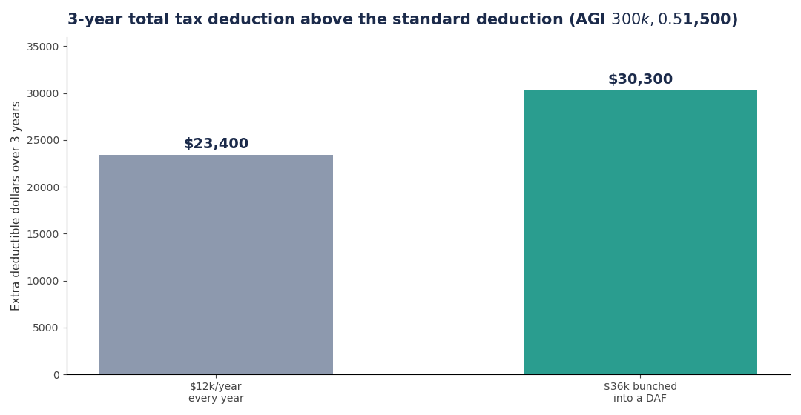
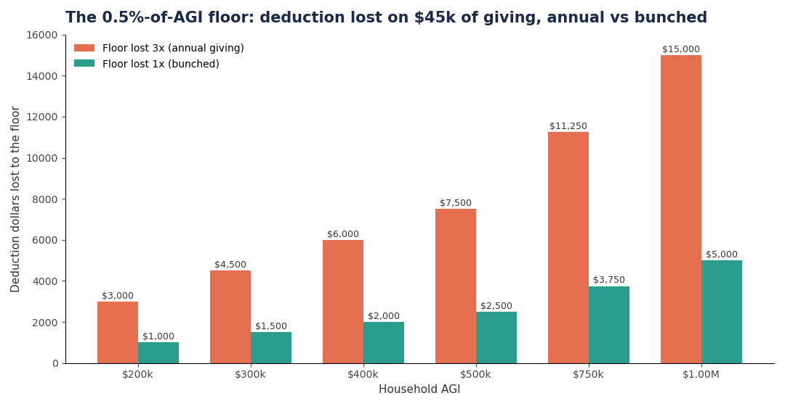
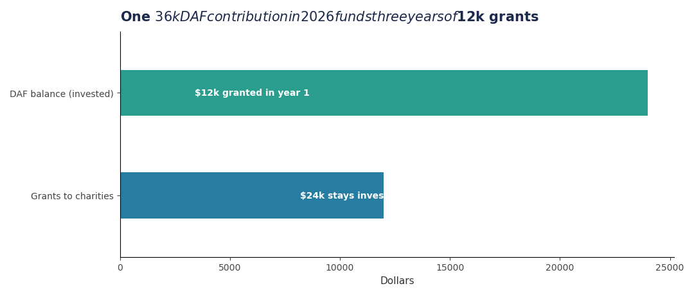

Starting in 2026, charitable giving has a new tax rulebook. Itemizers can only deduct contributions above 0.5% of AGI. Taxpayers in the 37% bracket get at most 35 cents of value per deducted dollar (the 2/37ths haircut). And non-itemizers get a brand-new above-the-line deduction of $1,000 single / $2,000 joint — but donor-advised fund contributions don't qualify for it. Michael Kitces's analysis of the changes concludes the rational response for planners: bunch harder, not less. (Kitces: Minimizing the Impact of the 0.5%-of-AGI Floor, Fidelity Charitable on year-end bunching, Charity Lawyer Blog on the new 2026 rules)
The math: why annual giving bleeds deductions
Take a household with $300,000 AGI that gives $12,000 a year. Their 0.5% floor is $1,500 — the first $1,500 of every year's giving is simply not deductible. Three years of annual giving loses the floor three times: $4,500 of deductions gone.
Now bunch it: contribute $36,000 to a donor-advised fund in 2026 — three years of giving in one check. The floor applies once: $36,000 − $1,500 = $34,500 deductible. Same $36,000 given, $3,000 more in deductions, and year 1's itemized total ($34,500 charitable + SALT + mortgage interest) easily clears the $32,200 standard deduction for joint filers.

Scale it up and the floor bites harder. On $45,000 of giving at a $1M AGI, the floor is $5,000 — lost once when bunched, three times ($15,000) when spread:

How the donor-advised fund makes bunching practical
The DAF is what lets you take the deduction in the high-income year while the charities get paid on your normal schedule. You contribute $36,000 in December 2026, claim the deduction on your 2026 return, then grant $12,000 a year to your actual charities in 2026, 2027, and 2028. The un-granted balance can be invested and grow tax-free inside the DAF.

Two more 2026-specific details:
- Fund it with appreciated stock, not cash. Donating shares held over a year to a DAF gives you a deduction for fair market value and you never pay capital gains on the appreciation. Then rebuy the same shares in your brokerage account with cash to reset your cost basis — the wash-sale rule doesn't apply because you gifted, not sold. Cash donations to a DAF are capped at 60% of AGI; appreciated securities at 30%.
- Time it to high-income years. Bonuses, RSU vests, a business sale, or a big Roth conversion year are the ideal bunching years — the deduction is worth more at your top marginal rate, and a giant conversion year also raises your 0.5% floor, so offsetting it matters more.
What not to do
- Don't fund a DAF expecting the new non-itemizer deduction. The $1,000/$2,000 above-the-line deduction is for cash gifts to public charities only — DAF contributions are explicitly excluded.
- Don't assume the disallowed floor amount carries forward. It generally doesn't. If the floor eats $2,000 of your 2026 gift, that $2,000 is just gone (unless your giving also exceeds the percentage-of-AGI caps, which creates a different carryforward).
- Don't contribute money you might need. DAF contributions are irrevocable — once it's in, it can only go to charity, never back to you.
- Don't park the DAF in cash for a decade. Sponsors charge ~0.6%/year on the balance. Invest it in a simple index allocation so the money works while you decide where it goes.
- Don't ignore the 35% cap at the top. If you're in the 37% bracket, every deducted dollar is worth 35 cents, not 37. Still worth bunching — just price it right.
Takeaways
- 2026 itemized charitable deductions only count above 0.5% of AGI — bunching means you pay the floor once instead of every year.
- The $32,200 joint standard deduction is the hurdle; a multi-year DAF contribution clears it in the bunch year, and you take the standard deduction in the off years.
- Fund DAFs with appreciated stock, rebuy to reset basis, and never pay the gains tax.
- New for 2026: non-itemizers get up to $2,000 above-the-line for direct cash gifts — but not for DAF contributions.
Further reading: Kitces on minimizing the 0.5%-of-AGI floor, Fidelity Charitable's bunching guidance via FA Magazine, and the Charity Lawyer Blog's 2026 rules rundown.
Not tax, legal, or investment advice. Check your own situation and talk to a professional before acting.